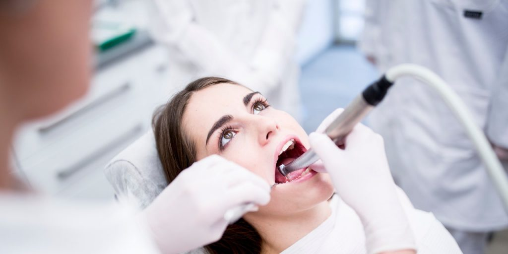
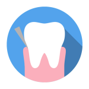
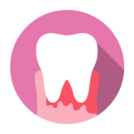
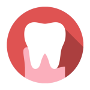
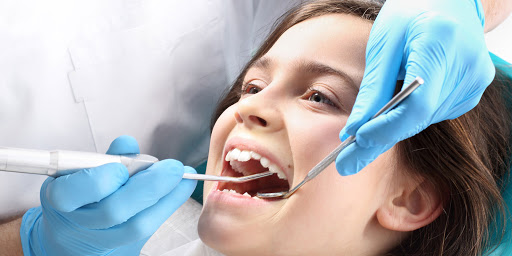

Emergency Dentist in Spokane
Do you need an emergency dentist in Spokane, WA? We are ready and waiting for your call!
Spokane Emergency Dental Clinic
Dental problems can range from a minor inconvenience to severe depending on the situation. If you feel that your dental problems are troubling you then don’t hesitate to have them checked and treated right away.
There are dental clinics that provide their services to clients who urgently need them. They are found in the form of emergency dentists.
Let us look at an emergency dentist in Spokane and how they provide a huge amount of relief to their clients in the present.
Emergency Dentistry Services

ACHING
Tooth, Teeth, Gums and Mouth
CRACKED
Tooth, Teeth, Veneers, Fixtures

STUCK
Object stuck in gums or teeth
DISLODGED
Tooth, Teeth knocked out

BLEEDING
Gums, Lips, Mouth

SEVERED
Gums, Lips, Mouth

Common Emergency Dentist Situations
It’s never fun to be in the situation where you’re searching for an emergency dentist, but the sooner you book yourself into see someone the better your chances of limiting any damage caused. Our Spokane emergency dentist team have you covered
We get a lot of emergency dental cases from cricket, hockey, rugby or sporting incidents along with accidents that result in dental trauma like chipped or broken teeth.
For less severe injuries, such as a loose or knocked out tooth, follow the steps below:
Procedures for a knocked-out tooth
- If the tooth is knocked out of the mouth and can be found, you have a good chance of saving it. Rinse it underwater for 10 seconds – don’t wipe or scrub it the tooth as this can damage the roots. Place it back in the socket. Hold the top of the tooth, not the root when you’re handling it.
- If you cannot place it back into the socket then store the tooth in milk if you have some available, failing that use saliva. Worst case you can wrap it in a moistened paper towel, but don’t store it in plain water.
- A tooth that is replaced into the socket within 30 minutes has a good chance of surviving, anywhere up to an hour is acceptable, but the sooner you can do this the greater the chance you have of saving the tooth.
- Children’s Baby teeth that are knocked-out are not to be replanted.
- All cases of a lost tooth need to be urgently assessed by a dentist. The treatment options vary depending on the severity of the case, however, it’s common to splint the tooth to the surrounding teeth for 1-2 weeks, much like doctors will do with a finger injury. If the bone has been fractured there could be more serious implications.
- See a local emergency dentist in Spokane, WA ASAP and they could still save it.
Procedures for a loose tooth
- If you have a loose tooth from sports or an accident you should see a dentist immediately. You might have bleeding in the gum tissue, however, if you can reposition the tooth and stabilise it into place there is a good chance it will survive in the long run.
- Baby teeth that are very loose will often be removed – your dentist will advise you in this case.
Procedures for Fractured Teeth
- Tooth fractures can range in severity from minor, for chipped outer layers of enamel and dentin, to severe, where fractures of the tooth and root can occur.
- If you are experiencing sharp pain when chewing food or drinking this could be an incomplete fracture. Dentists can fix this with a filling. More serious cases can require a crown and others a crown and root canal. X-rays can determine the severity of the fracture and determine what treatment is required.
- Damage to the enamel only can be handled in a relatively simple manner, more complex treatment may be required for fractures to the secondary layer of the tooth, the dentin, and the innermost area of the tooth, the pulp.
- Serious fractures that expose the dentin and the pulp of the tooth needed to be treated immediately, contact an emergency dentist in these scenarios.
If you need advice over the phone or emergency dental care with no waiting list, call us now on 509-413-0112.
Our emergency dental clinic in Spokane, WA is open Monday to Friday from 8:00am to 5:30pm. After-hours visits are available by appointment only.
hat Constitutes a Dental Emergency?
Patients need to determine what falls under the category of dental emergency in order to maximise the treatment that they will be receiving. It should also be noted that services revolving round emergency dental in Spokane cost way more when compared to the regular ones.
The reason behind this is that your dental problems will be attended right away even after office hours. The huge amount of convenience comes with a cost but many find it to be justifiable as they are treated in a timely manner.
So what constitutes a dental emergency?
There are a number of dental emergencies found today. Among the common ones include gum and pulpal abscesses, swelling or bleeding, broken teeth, infected or cracked tooth, inflammation around wisdom tooth as well as trauma to tooth from an accident.
Time is of the essence during these instances which makes the services of an emergency dentist valuable.
Make sure to find emergency dental clinics to save yourself from the hassle when accidents happen.
When do you need an emergency dentist?
Even if you take good care of your teeth, accidents can happen when you least expect it. Knowing what to do in a dental emergency and visiting your dentist for emergency dental care can reduce the impact of dental accidents on your overall health and help you get started on the road to recovery.
Common dental emergencies that require immediate attention include:
Cracked, chipped or knocked-out teeth
If you’ve got a toothache or your tooth feels very sensitive to hot and cold, it might be chipped or cracked.
Cracks can sometimes be tiny and may only be visible to your dentist, who may be able to repair the tooth with a filling or dental crown.
If a tooth is knocked out completely and it’s still in one piece, it may be possible to reattach it if you can see a dentist within 1 to 2 hours.
Carefully place the tooth back into the socket or store it in a cup of milk and contact our emergency dentist Spokane to arrange a priority appointment.
Tooth pain
Other reasons for tooth pain and sensitivity can be tooth decay or cavities inside the tooth.
You can try to relieve the pain or swelling by applying an ice pack to the outside of your cheek. Rinsing your mouth with salt water could also help to clear away food and debris.
Do not apply heat to swelling, as this can make matters worse.
Contact an emergency dentist for a professional diagnosis and treatment recommendations. If you have a cavity, you might need a filling. An infected tooth may need a root canal treatment.
Gum pain
Gums may feel sore for a number of reasons, but sudden and severe gum pain may be caused by a partially erupted wisdom tooth or a dental abscess below the gum.
You can try to ease the pain by rinsing your mouth with a mild salt water solution. Do not put aspirin directly onto the gum, as this could cause permanent damage.
Gum pain is sometimes a symptom of a more serious oral health problem, so you should contact an emergency dentist for diagnosis and treatment. This may involve cleaning the area to remove an infection or wisdom teeth removal.
Children’s dental emergencies
Children’s active lives can put them at greater risk of dental accidents.
Wearing a mouth guard when playing sports can reduce the risk of injuries, but it’s still important to know what to do and how to stay calm if the worst happens.
Our Spokane emergency dentist team is qualified and experienced to deal with common dental accidents involving children and pre-teens.
Knocked-out teeth
If your child loses a baby tooth, these cannot be reattached, but it’s still important to see a dentist as soon as possible.
If they lose a permanent tooth, there’s a chance it could be saved if you can get to our dental clinic within 1 to 2 hours.
Rinse the tooth gently, avoiding touching the roots, and try to place it back into the socket. If it doesn’t fit, place it in a cup of milk and contact an emergency dentist for assistance.
Damaged braces
Broken braces may cause pain or injuries to children’s mouths, as well as affecting the success of their orthodontic treatment.
Sharp edges of wires should be covered with cotton to prevent injuries, but do not try to remove an orthodontic appliance yourself. Instead, contact our dentists for emergency dental care.
Urgent dental emergency appointments in Spokane, WA
Dental problems never choose the perfect time of the day to pop up. It may happen that during a slow, relaxing evening, or in the middle of the night, you start to feel the first twinges of pain. Dental pain is never the easiest to bear, so if it is interfering with your sleep, an emergency dentist in Spokane 24 hour can help alleviate it.
Whether day or night, many dentists Spokane wide are ready to tackle the problems their patients may be having. It is essential to know a dental surgery for emergency situations. Many go about their daily lives believing that dental pain cannot be so sudden. But once they experience the inconvenience of such pain, they wish they had a dentist Spokane based to count on. Good dental hygiene can stave away the problems, but once in a blue moon an unexpected issue may arise.
Therefore, it is wise to do some research and find out about the dental surgeries in your area that offer a 24 hour or out-of-the-hours service. In addition, one should research about the type of treatments they offer, as some surgeries limit themselves to only the essential procedures. An all round dental surgery should have an optimal team, offer different varieties of tooth filling materials, and have an x-ray ready in case there might be a root canal problem.
An emergency dentist in Spokane 24 hour service can be a life-saving solution to your problems. But as with any dental procedure, choose the very best specialists.
Google Maps: //goo.gl/maps/crR5tbFa68JuiFVZ9